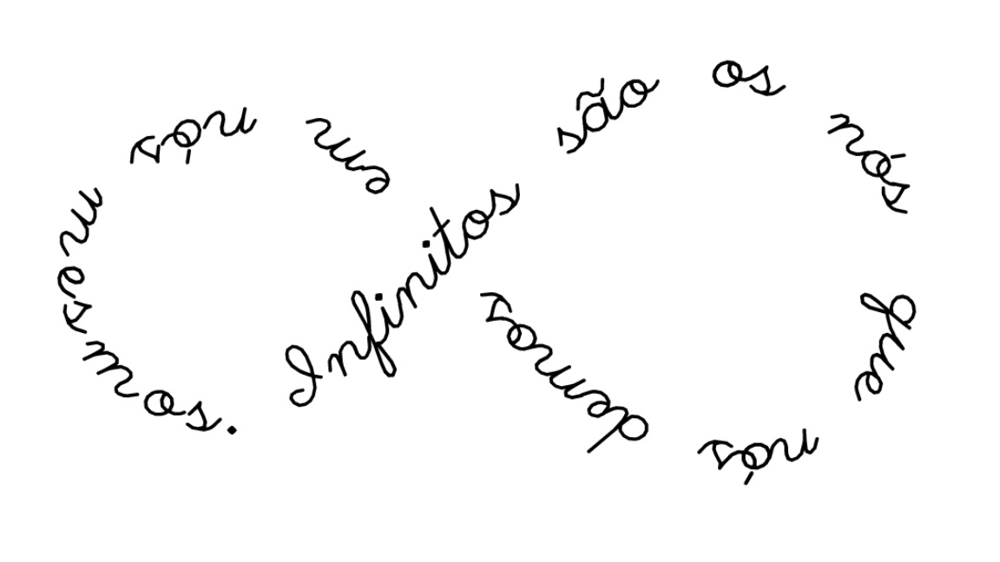

Esboço
Eu te
faço
em traços
e me
desfaço
em pedaços
Inércia
Em meio a esse eco surdo
Eu digo tudo sem dizer nada
Com a respiração abafada,
Eu grito meu grito mudo
Num mundo onde ninguém vê
Nem ouve, nem sente
Só mente, só mente, somente.
Há quem tenha reparado
No meu olhar demasiado aflito
Diante de todo o caos.
Quem me dera consertar tudo…
Dos meus versos mais profundos,
O meu mais profundo silêncio.
Precoce
Amigo, amigo meu
A seu lado eu sou mais eu
E eu que mal lhe conheço
Já me virei do avesso
Já lhe mostrei meu mundo
E é por isso que agradeço
Com um poema vagabundo
Por tornar-me amigo seu.
Troca
Eu que sempre quis rimar
E achei que não sabia
Agora peço pra trocar:
Troco em dinheiro
Troco em bala
Troco o livro
Troco a música
Troco a fala
Troco a fantasia
Eu que sempre quis brincar com as palavras
E achei que não podia
agora faço e desfaço rabiscos
Em graciosa harmonia
E agradeço todo dia
Por ser eterna poesia
Untitled
I’m afraid to give it my all
and try my best
because
if I still fail
it means that my best
wasn’t good enough
… well, at least you can’t say I didn’t try.
Romance Passageiro
Eu lhe apresento
O meu romance passageiro
Que durou um dia inteiro
E à noite teve fim.
E fim!
Mas tudo bem, eu me contento
Com o romance passageiro
De um dia de janeiro
Que acabou, simples assim:
Sem fim.
Eu espero o momento
Em que o romance passageiro
Deixe de ser passageiro
E que dure o ano inteiro
E não um dia de janeiro
Pra que seja bom pra mim:
Sem fim!
E fim.
Amor Lunático
uma nova paixão surgiu de repente
alegrando a alma e a mente
e era amor tão crescente
que me vi assim: cheia!
então subitamente
minguou
sem nem dizer por quê.
depois disso
nunca mais fui eu novamente.
Eternos Sentimentos
Eterno beija-flor
Que me beijou e foi embora
Que me mostrou o que era amor
E depois voou mundo afora.
Quanta dor que me causou
A sua eterna despedida
Devolva o que me roubou:
A vida! Ah, vida...
Eterno beija-flor
Que tanto me magoou
Desfrutou do meu calor
Bateu asas e voou.
Mais que tudo
Mãe, mais que isso, mais que tudo
Álibi que me tira a culpa e o peso do mundo
Riqueza maior que esta não há, e ouro não pode pagar
Conforto dos teus braços é onde posso me abrigar.
Intuitivo coração que me livra de intriga,
Amor que não se mede, amor de mãe, amor de amiga.
Vidas nossas que se ligam por um fio
Inunda o meu ser, preenche meu vazio
Luz que ilumina minha estrada e minha alma
Liberta-me dos medos, traz-me paz, traz-me calma.
Apoio-me em ti para chorar todas as dores dos desafetos, dos desamores
Companhia de coração que levo em cada canto
Amo-te agora e hoje e muito e sempre e tanto,
mãe minha, minha mãe.
Ali & nação
Por comodismo
Ou infortúnio
Em sua cabeça
Ali e nada
Eram o mesmo lugar.
Enfermidade
Foi ao hospital
Sentindo no peito pontadas de dor.
Ao ser atendida, perguntou:
— Que há comigo, doutor?
— Ah, moça – disse o médico –, é hemorragia interna!
Creio que a senhorita
Esteja morrendo de amor.
Incondicional
Eu te amei ontem e anteontem
E te amo hoje novamente.
E se o português me permitir
Conjugar o verbo no futuro do presente,
Eu te amarei amanhã e depois de amanhã
Todos os dias
Eu te amarei eternamente.
Prelúdio
O presente do infinito
É engraçado ver
Tantos infinitos num infinito só:
Eu infinito
Tu infinitas
Nós infinitos...
Demos um nó
E não tem mais jeito
São infinitos nós dentro de nós infinitos
Infinitamente escritos
Em algum lugar do peito.
Coisa de FBI
Eles dizem que a gente
Deve ficar separado.
Não que isso seja errado!
Mas tenho dúvidas pendentes...
Sei que não sou James Bond,
Especialista no assunto,
Mas eu acho que agente
Deveria ficar junto.
Afinal... a gente só se separa no português.
Amor de Mártir
Ao amar-te, calo; grito ao mar:
— Te amo!
Martírio é a Marte ir,
Suicídio é amar-te tanto.
É tão difícil resistir
À beleza do teu encanto
Amar-te há de trazer a Marte
A (se)cura do meu pranto.
Assim a vida vou levando;
Amar-te é mar calmo,
A Marte sigo te amando.
Pisciana
Peixe nada, Peixes ama, pisciana
apaixonada
Mulher doce e delicada
como flor, e dedicada
a todo amor.
Alma pura, coração ingênuo
fonte de sabedoria
e olhar sereno que ilumina
a noite escura
e a manhã fria.
Ela é sol
nascente
no fim de tarde
Feixe de luz
na escuridão
poente
Uma canção
decerto ardente
de paixão
Intensa, viva e soberana
não bastasse ser mulher,
tinha de ser pisciana.
Ice Berg
Está enganado quem pensa
Que o homem é consciente de seus atos.
Se algo dá errado,
Culpam a Deus,
Ou a outros, ou até aos ratos da esquina,
Mas nunca veem os fatos
A olho nu;
Preferem viver às cegas
A admitir que o colapso imerge
Das diversas esferas
De dentro de si.
MAX
When you left me
I felt like dying inside
My soul turned into pieces
of this broken heart of mine.
May God allow us to gather again
When the time comes, and I pass away.
Until then, know my heart will be with you
Where it must forever stay.
Fragmentos
Meu coração se dilacera
Minha alma se fragmenta
Com o toque que se espera
Com a memória que se inventa
Sou pedaços de mim
E do que não sou eu
Sou imagens sem fim
Daquilo que um dia foi meu
Hoje existo, mas não vivo
Estou viva, mas não nasci
Sou fragmentos da alma
A que um dia pertenci
Linha Tênue
Que nossos laços sejam firmes
O suficiente para nos unir
E o suficiente para discernir
A linha tênue
Entre estar próximo e sufocar
Porque você é meu lar
E não há no mundo outro lugar
Onde nem por um segundo eu queira estar
Além do lado seu.
Império de Sangue
“Vós estais conosco ou contra nós?”
Gritam as vozes dos animais
Naquele ano em que o sol se pôs
E desde então não nasceu mais
A marcha fria da legião
Os disparos do arsenal
O ruído surdo da explosão
“Livrai-nos de todo mal.”
Desde o fim da nossa sorte
Hoje já faz cinco anos
Há fome, miséria e morte
E tantos irreversíveis danos
Maldita seja a gangue
Que arrancou a nossa paz
Marchas do império de sangue
Que nunca se satisfaz
Truth Untold
Heaven whispers through my mind
Words I keep inside my soul
I’ve waited too much for a sign
While the answer has been here for so long
(And I hadn’t noticed)
Well, now the mystery is solved
I can tell you what I know:
Happiness is not a gift, but a long way to go.
Ladrão Sorrateiro
Primeiro, eu cortei os doces e frituras.
Em seguida, o queijo e o trigo
- Pão, bolo e macarrão?
Nem pensar.
- Vai ficar só nas verduras?
Minha mãe dizia
- Não quero engordar
Preciso ficar bem comigo
Depois, cortei leite com Nescau.
Molhos, cremes e temperos
Zero açúcar, zero sal.
Já não tinha gosto a comida.
Nem sabor, nem graça, nem vida.
Era difícil distinguir
Até carne de salada
Passei então a reduzir
Até chegar a quase nada.
Os líquidos, esses eu aumentei:
Água enganava a fome
Chá também servia.
Quem sabe até limonada.
Suco de laranja, esse não valia.
Coca-Cola eu nem citava o nome
Até que de casa eu não mais saía
De festas não fazia questão
Porque beber eu não podia
Nem comer fora da refeição
De amigos abri mão
Vida? O que é isso?
Algum dia saberia?
Não podia responder
Porque viver já não vivia.
Sobre o Amor
O que é o amor
Senão combustível da dor?
Tentei amar
E, pois bem, amei como nunca havia amado.
E o que de fato me restou
Além de cicatrizes e um coração estilhaçado?
No entanto, há quem diga
Que ama e sente bem
Amor puro, amor leve, amor além.
Como poderei saber do amor
Se nunca mais amar ninguém?
Pensei um dia saber amar;
A verdade é que ninguém sabe de fato.
O que é o amor
Senão puramente insensato?
Casa de Espelhos
Entre um vão e outro
Dessa casa de espelhos
Vejo em fragmentos
A minha imagem
A minha alma
Pelo chão, cacos espalhados
De vidro
Do coração
Juntei os pedaços
Uni as feridas
Dei pontos nos cortes
E na vida...
Das cicatrizes que carrego
Ao pó que hei de me tornar.
Um brinde ao sal
Ao sal que corrói minhas feridas abertas
Estas palavras eu dedico:
Das algemas que me prendiam a mente,
Minhas mãos estão libertas.
E ao pensar livremente,
Não sei se vou ou se fico
Ou se espero que as feridas sejam cobertas
Com as palavras que lhe dedico.
Ocitocina
Entrei em terra sem lei
Utopia de tudo o que sei
Alma de passarinho, coração de cigano
Mantenho os pés no chão, mas quem eu engano?
Outro ano que passa e o coração a amar
Vaga, vaga, mas volta ao lugar
Onde estiver, é onde andarei
Caminhando entre flores
Entrando em terra sem lei
Nunca o suficiente
A cada falha que cometo
Meu espírito se corrói em agonia
Pois cada falha é um lembrete
De que sou menos do que eu queria
Elegia
Aqui no hemisfério sul
Era verão em janeiro
O céu era azul, azul
Com trinta e poucos graus o mês inteiro
Não faz muito tempo, bom tempo fazia
Durante o dia o sol raiava
E lá pelas cinco chovia.
Era só chuva de verão,
aquela boa tempestade
com direito a raio e trovão
que cessa no fim da tarde.
Aqui no sul, era verão em janeiro…
Mas é janeiro e só chove e esfria
Tempo nublado e úmido o dia inteiro
Com quinze graus ao meio-dia.
Aqui no hemisfério sul
Parece inverno outra vez
Não vejo mais o céu azul
Nem vejo mais o sol brilhar
A quinze dias do fim do mês
Chove, chove, chove, chove
Há quinze dias sem parar
No hemisfério sul, não faz calor em janeiro
Eu me pergunto onde está o verão brasileiro
Divisão silábica
aprendi
divisão silábica
antes mesmo de entender
o que eu sentia
a-mor
ó-dio
tris-te-za
a-le-gri-a…
“cada palma é uma sílaba”
a professora dizia
nas-ci
(palma-palma)
cres-ci
(palma-palma)
sen-ti
(palma-palma)
vi-vi
(palma-palma)
aos sete anos, dividir palavras eu sabia
mas aos vinte e cinco, meu coração ainda me confundia
comecei a escrever
assim quem sabe eu mesma me entendia…
meu espírito, sempre volúvel,
viveu a vida toda entre o real e a fantasia
e eu, de alma sonhadora indissolúvel,
almejava uma existência menos vazia
nas-ci (palmapalma)
cres-ci (palma-palma)
sen-ti (pal-ma, pal-ma)
vi-vi (pal-ma, pal...)
mor-ri.
enfim achei sentido na vida
quando achava que morria
um amor maior que eu
e tudo o que eu achei que conhecia
eu, uma eterna romântica
aproveito a arte da grafia
e brinco com a semântica,
divisão silábica e poesia
fazendo meu apelo
ao meu amor, o meu maior zelo
ao seu lado, estou viva
sem você, eu morro
vi-da
mor-te
a-mor-te-vi-vo
a-mor-te-a-mo
Inteira pela metade
Parte de mim é amor
Parte de mim é saudade
Depois de ter vivido a dor
Só sobrou de mim a metade
Já pensei em desistir
Abrir mão, deixar de existir
Mas no fim segui firme e forte
Ou covarde, como preferir
E aqui estou, viva e inteira
Se por vontade ou sorte
Não saberia eu distinguir
Imperfeição
Tenho medo de errar
Mas sigo o tempo todo errando
Nunca soube me perdoar
Por ser humana e viver falhando
E por pior que isso pareça
A cada falha, a cada dano,
Cada deslize que aconteça
Eu sinto que nascer foi um grande engano
Body dysmorphic disorder
I’ve always had trouble to find acceptance in who I am
in this shape that I have
There are some days when I look at the mirror
And I don’t recognize myself
I look at the reflection of that body of mine
And I find myself hating every inch of it
because it seems so wrong
so ugly
so… dysmorphic
Then I curse my ancestors
For the poor genes they gave me
Why did I have to be this way?
So I think: what do I have to do
to lose all this fat that only my eyes can see?
I’ve started eating healthily
And exercising compulsorily
And I ran, ran, ran, ran for many miles
For many days
For many years
Burned as many calories as I could,
Sent all the fat to hell
where it belongs
Ten years have passed
And now I see my body better than it was
I finally got slimmer, prettier, skinnier…
But it’s not enough
I still struggle to love it as it is
because it’s still so far from the way I wanted it to be
It’s far from the way it should be,
faced with all the care I’ve had shaping it
I feel so wronged, it’s so unfair
Looking at the other bodies to which mine I compare
Why does it have to be this way?
I hope one day accept who I am
Or earn enough money to all the plastic surgeries I want to have
SAM
Eu te amei logo que te conheci
Perdido, brincando, correndo sem rumo
Desavisado dos perigos do mundo
Abanando o rabinho ao me ver por ali
Era como se dissesse: “Que bom que tu vieste me buscar!”
Eras tu tão pequeno, e frágil, e doce
Que mesmo que meu não fosse
Era comigo que devias estar
Então te peguei no colo e te levei comigo
Para a minha casa, teu novo abrigo
Que agora é também teu lar
Desde tua chegada, tu me trouxeste só alegria
E é por ti que eu sorrio todo dia
Tu és meu sol depois da tempestade
Minha alma fora do corpo, minha outra metade
Tu és por quem transbordo amor
E assim te levo comigo aonde eu for
Acidente
minha mente é um carro sem freio
que dispara sem condução
ligo o motor - acordo
pensamentos vêm à tona sem aviso
quantos deles já se foram?
não sei, não me recordo
disparo a mil e cem por hora,
faço as coisas sem pensar
perco a mão, deslizo no asfalto, improviso
a vida não pode parar
o batimento acelera e eu troco de marcha
o tempo todo sinto estar correndo contra o tempo
numa longa viagem de curta duração
meu coração desenfreado sempre confrontando
com a cabeça sem direção
queria saber controlar os impulsos
e ouvir a voz da razão
mas a vida é via de mão dupla
e eu sempre ando na contramão
Inconsciente
Sou medo, sou receio,
Tenho a alma partida ao meio
Sou as sobras de mim
Dos meus erros do passado
Sou começou, meio e fim
De um coração todo quebrado
Sou os pedaços que restaram
Os cacos espalhados no caminho
As feridas que não cicatrizaram
A angústia de quem vive sozinho
Sou a culpa, a falha, o erro
Sou o prelúdio do enterro
A vida passa por mim num instante
E eu a observo passar, distante